Problems and Objectives
Thrust by props is problematical, as props prevailingly produce a twisting flow. They also produce an air flow by suction. However both components are not transferred into thrust. The prop-mechanism of conventional helicopters is even less effective. They produce stormy winds by heavy noises and consume much fuel. They can not fly far distances. their performance is most limited; already at the high mountains.
Instead forcing down the air, one should use the atmospheric pressure for gaining lift forces. At a normal wing, the air is accelerated at the upper face, in average floating 50 km/h faster along than at the below face. The difference of air flow speeds results a difference of static pressures at both faces and thus results the lift force.
One can create air movements also within a closed box. As an example, the air can rotate continuously within a round and flat cylinder. The speed of flow can differ at the upside and below inner-faces. That will be an autonomous system for generating lift forces, independent from external air movements. The forces will be sufficiently strong for helicopters (and for the draft of other vehicles).
The air weights with 100000 N/m^2 at each square meter. If this pressure is reduced only by one hundredth, the difference will be 1000 N/m^2 (actually common wings achieve a multiple of). In order to lift a helicopter of e.g. 3.5 tons, that force must be applied at 35 m^2 ( a circle face of about 3 m radius, exact calculations see below). In place of the rotor of a conventional helicopter, thus one must install a wide, round and flat box of corresponding size. As an alternative (respective preferred) diverse smaller unit are shifted one above the next.
Following is the description of essential characteristics of my invention. This invention is not applied for a patent. These ideas are open-source for everybody. This could allow fundamental approaches for the aero techniques.
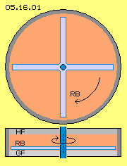
Constructional Elements and Air Movements
At picture 05.16.01 are sketched general construction elements, upside by cross-sectional view and below by longitudinal cross-section through the system axle. A hermetic closed box (grey) has a round cross section, much wider than high. At the centre, a shaft (dark blue) is rotating (here clockwise). Diverse (here four) rotor blades (RB, light blue) are mounted at the shaft. All the air (light red) within that hollow cylinder thus is rotating around the system axis.
The rotor blades are moving short distant above the below inner face. That surface here is called the ´slide-face´ (GF, light grey). That surface is most smooth, so the air can glide along with most few resistance.
Opposite, the inner face upside is called the ´stick-face´ (HF, dark grey). It´s most rough, so the air is delayed respective can flow along only with reduced speed.
The following picture 05.16.02 shows sections of the area between the stick-face and glide-face (HF and GF). The rotor blades (RB, light blue) are rotating above the glide-face rotate, here moving from right to left. The profile of these blades is flat upside and below, the left and right faces however are concave.
These boxes are hermetic closed. The normal atmospheric pressure weights at all outside surfaces (see arrows at A). So that force is neutral concerning that unit. At the inner faces however, the static pressure towards the stick-face should be much stronger than towards the glide-face (see arrows at B).
This is achieved, if the air flows along both faces with different speeds. Here, the air moves along the glide-phase with few resistance. Based on the relative high speed, that flow shows high dynamic pressure into direction of its motion (kinetic flow-pressure) and corresponding reduced static pressure (aside of the flow-direction).
Also the air near the stick-face is moving into likely direction. Its motion however is hindered at the rough surface. Based at its relative low speed, that flow will show less dynamic flow-pressure and corresponding stronger static pressure aside, thus towards the stick-face.
Air Circulation
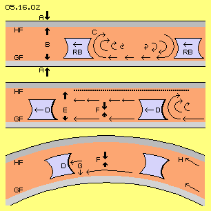
Here, the right rotor-blade (RB, light blue) is shifting the air towards left. Pressure is merely necessary, because the air follows the left rotor-blade ´by-itself´. Each back-moving wall releases a relative void area, into which the air particles fall, up to sound-speed, simply based at their continuous molecular movements.
A stick-friction comes up rear-upside of the rotor-blade, here marked as area C. The ´resting´ air at the stick-face holds up the faster flow. Air-particles are pulled out of the rear face of that rotor-blade. Thus also there comes up an area of relative void. Thus some air from below follows that void. That suction reaches far back. Thus the air is moving fast along the glide-face, faster than the rotor is moving. In front of the right rotor-blade, the air is sucked down. So between both rotor-blades the air is circling around, like marked with the round arrows at this picture upside right.
This motion process is comparable with a car wheel: the tire keeps resting at the road for a short moment. Afterwards, it rises up and accelerates to the double speed of the car. Finally that piece of tire falls down again at the road. A chain-link of a tracked-vehicle rests long time at the road, is pushed up and is moving high speed long distance. Finally at the front of the vehicle it´s laid down at the road again. Here, the stick-face works like the rough asphalt and the high-speed motion is running along the glide-face.
Suction and Pressure
The air motion within the cylinder prevailingly comes up via suction at the rear face of the rotor blades. That suction-side D is pointed out once more at the middle row of the picture. A row of black points represents the nearby stationary air direct at the stick-face. Below of, the air is moving forward, however slower than the flow direct above the glide-face (see arrows of different length). Both flows have different flow-pressures, resulting the difference of static pressures at the stick- and glide-faces (see vertical arrows at E) and thus resulting the wanted lift-force.
The remaining static pressure affects versus both faces. However, the different pressures are affecting also between both flows, like marked by the arrows at F. Resulting is the well known bending of flows, all times towards the faster flow. This again effects the appearance, the air is moving around round faces with especially less resistance. This effect is shown at the below row of that picture.
The stick- and glide-faces here are curved. The pressure-difference F pushes the fast flow ´around the corner´. So at that smooth surface will exist well ordered laminare flows. At the one hand exists that relative void at the suction side D of the rotor-blades. At the other hand, the convex curvature of the glide-face represents also a ´back-stepping wall´, by view of the tangential motion direction. This affects an additional suction (see arrows at G), so the air particles fly around the curved face without resistance, self-accelerated. So from outside towards inward, the air is moving faster, thus building a potential vortex. The air between the rotor-blade and the glide-face is moving even faster than the rotor.
Right side below at H, an other advantage of the curvature is sketched: as the air movement generally is directed tangential, the air particles of the inner track fly outwards and relieve the glide-face. Opposite, the air particles at the outside track crash at the wall, affecting stronger pressure at the stick-face.
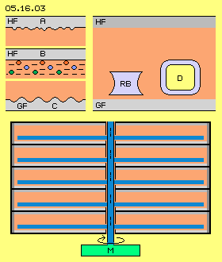
Constructional Characteristics
Picture 05.16.03 shows some details. The stick-face (HF) should be rather rough, e.g. like a sandpaper (see A). Thin wires produce high air resistance, so that surface could be covered with a grid of thin wires, even by multiple shifted layers (see B). One must search for suitable, stable sheets. The glide-face (GF) must be most smooth. If necessary, concentric grooves could be more stable (see C).
This picture upside right once more shows previous profile of the rotor-blade (RB, light blue). The air flow is most fast relative to the stationary glide-face (GF, light grey). At the other hand, the air is moving only some slower / faster relative to the rotor-blade. So a simple (and stable) profile could do, e.g. a rounded square like sketched at D.
These dimensions could be suitable: the gap between the glide-face and the rotor-blade with 1 cm to 2 cm, the rotor-blade about 2 cm to 4 cm height, its distance above towards the stick-face 6 cm to 12 cm. The whole hollow cylinder thus will show the height of only 10 cm to 20 cm (also by most different radius).
Below at this picture, some flat cylinders are piled up. The rotors are mounted at a common shaft. This simple shape of rotor-units can be build easy and light. The masses of involved air is less than one kilogram. This system can accelerate fast (and a ´wiper-engine´ will do). Such small units might fit e.g. for control-functions of a helicopter.
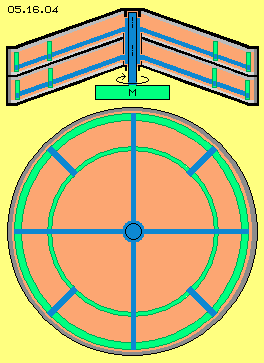
Cone-Engine
All lifting forces push the even stick-faces upward, so they must be build rather stiff. Much more stable are faces of a truncated cone. So it would be advantageous to build these boxes in shape of cones. Picture 05.16.04 upside shows a longitudinal cross sectional view through the system axis. Several layers can be piled up also at this version, all rotors mounted at one shaft and driven by one motor (M, green).
In order to resist the centrifugal force, the rotor-blades should be connected by rings (green) running all around. These rings could be guided at some slide- or ball-bearings (here marked only rough).
Below this picture shows a view top down. Between the rings could be installed additional blades, keeping the air in constant motion.
At this cone version, the rotor-blades do not only move the air at a circle track of a horizontal level. Here, the rotor-blades are sucking the air along the curved surface of the cone mantle. So here, that additional suction effect come up like discussed at upside picture 05.16.02 at G. Without any resistance, the flow follows that curvature. Even a potential vortex comes up with its self-acceleration effect.
Previous flat version is suitable only at small systems. At wider systems, the faces must be build cone-shaped and also these supporting rings must be installed. These measurements achieve stiff faces and stiff ´rotor-cages´, even with relative thin profiles, even for high revolutions. Such (multiple-layer) units e.g. are suitable for the draft of helicopters (and other vehicles too).
Bowl-Engine
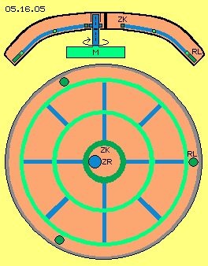
The air flows are relative slow at the central areas, so there won´t come up strong lift forces. The speed increases linear with the radius, the dynamic flow pressure by square. Also by square increases the surface, so the main lift forces come up at the outer regions. So the cone could be rather flat at the centre, however should be inclined at wider radius. That´s achieved by a bowl-shaped construction. Picture 05.16.05 shows that principle, upside by a cross-sectional view through the system axis, below by view top down.
In order to build a most stable and light construction, one should avoid a central shaft. The bowl-like stick- and glide-faces can be build throughout over the centre. The rotor no longer reaches to the system axis, but ends at a gear-rim (ZK, dark green). A gear wheel (ZR, dark blue) is installed at a shaft, driving the rotor.
The rotor-cage is build light with these curved profiles (blue) and connecting rings (green). However, the outside ring of this construction needs ball bearings (RL, dark green, preferred three) for suspension. Also the middle gear rim must be guided by suitable suspension.
This version of bowl-engines is used at large systems, e.g. for creating the lift forces for helicopters. Also multiple layers can be installed one above the other. Most interesting is also the possibility to shift one bowl within the other.
Multiple-Bowl
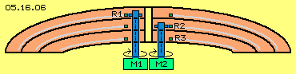
Picture 05.16.06 shows this variation with a schematic cross-sectional view. Here are assembled three rotor layers (R1, R2 and R3) with different radius, one within the other. The stick- and glide-faces of the middle layer are direct connected with the faces of the upper and below layers. All boxes are connected below-outside. Also at the middle, all faces are fix connected with a pipe (yellow). These round and curved sheets build a most stable body.
Three rotor-cages (light blue) are installed, each ending with a gear rim (dark green) at the middle. Each rotor is driven by a gear wheel at a separate shaft (dark blue) with a separate engine (here only shown for R1-M1 and R2-M2. The R3-M3 is at a shifted position). This measurement allows each rotor running with different revolutions corresponding to the demands.
For example, the wide rotor R1 could take the basic weight of a helicopter. The middle rotor R2 could take the current payload. The small rotor R3 can accelerate fast, suitable e.g. for take-off and rising up. The capacities should be dimensioned with sufficient reserve, so even the failure of one part-system is covered. Electric engines should be preferred for driving the rotor-systems. Usual emergency generators will do (also twice redundant). High demands occur only for starting the system or for acceleration (where part-systems can speed up one after the other). At running mode, only friction losses must be compensated.
New Helicopter Design
Previous air-pressure machines in shape of disks, cones and bowls can be combined in diverse modes. The design of aircrafts in general will show new and different characteristics. As an example, at picture 05.16.07 is sketched a new conception of a helicopter, upside left by view top down, right side by view at the front and from aside.
The contour of the cabin (A, grey) has a round bow and becomes smooth narrowed to the rear end. The contour (B, green) of the helicopter reaches far out of the cabin, in front above the bow, flattened aside and to the rear end. As a whole, the upside face builds a dome C.
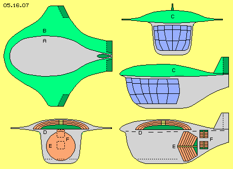
At the front, this dome is build like the nose of a wing. Towards both sides, the dome smoothly passes over to short wings. Control-flaps (dark green) are mounted outside-back at the wings. Horizontal tails and a rudder (dark green) are installed at the rear end of the dome. That flat dome with its wing-profile will contribute lifting forces at horizontal flight. So that shape shows the characteristics of a (compact) airplane.
Below of that ´dome-wing´ hangs a rather high cabin. The view at the front side shows the maximum width. The cabin has a round bow and becomes smaller to the rear end. The wide usable room still is shaped flow-conform.
At the below row of that picture are drawn the positions of different engines. The lift-engine (D, red) is installed within the dome, here e.g. with three bowls integrated one within the other. The area for the drive-units of the rotors is marked green.
Instead of the complex rotors of common helicopters, the draft here is done by a separate unit, with a horizontal shaft and separate engine, here in shape of a cone-machine (E, red). As an example and for optimum usage of the available space, the radius of the rotor-layers are different long.
Instead of conventional service-rotors, here also the control-units are integrated within the fuselage. Here are drawn two units (F, red). These are simple disks with relative short radius, so the rotors can accelerate fast. When starting that system, both units are directed at opposite position, so their thrust forces compensate each other. These units are suspended to turn and swivel around two axis. If both are turned back, forward thrust comes up. If both are directed towards the front, the helicopter will fly backward. If both units are turned aside, the helicopter will turn around its vertical axis.
That helicopter, for example, could have dimensions like these: total length and width about 8 m, the height some 4 m. The usable space of the cabin could be 3 m long, wide and high (with electric generator, starter battery and tanks at the double-floor). The lift-rotor (D) has a diameter of about 4 m, the draft-rotor (E) up to 3 m, the control-units (F and G) about 1 m. Now it's the question which forces might be achieved at which revolutions.
Calculation of Forces
The following calculations are based at these general points of view: prevailingly is used the suction effect which works only up to sound speed. Important are most clear flow structures. Thus only speeds up to 150 m/s are used here (or much less). It´s assumed, the flow at the stick-faces will be slower than at the glide-faces by 10 %. Suitable forces however come up already at 5 % difference.
The difference of dynamic flow pressures corresponds to the difference of static pressures. These weight at circle faces. The surface increases by square with the radius. The speed rises linear, however it´s affecting by square. So the major part of forces come up at the outer areas. Exact data must be calculated by integral. However, usable values are achieved, if the pressures at the rim of the disk are applied at two third of the circle-face. Simplistic can also be assumed, the speed-difference of previous 5 % results a similar difference of forces (as these values can only be measured empirical).
Forces of Control-Units
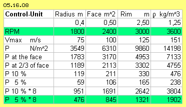
Table 05.16.08 shows data of the control-units sketched at previous helicopter (picture 05.16.07 at F). The rotor radius is 0.4 m, two units with each four disks are installed, thus eight pairs of effecting faces. The table shows results of 1800 up to 3600 rpm (thus with 75 m/s up to 150 m/s). Suitable thrust-forces come up already by 5 % differences (marked green). Double revolutions increases the forces by square, certainly sufficient for this helicopter.
At normal flight phase, that helicopter can be controlled by flaps and rudder. The internal control is only necessary for hover flight and landing for keeping a certain position. At normal case, both units are directed towards each other, so their thrust forces compensate each other. If the units are swiveled or turned, previous thrust forces are available spontaneous. Such air-pressure-controlled aircrafts produce no external air movements, they start and fly and hover and land quite silent. They can even float into their hangar by itself.
Thrust Forces
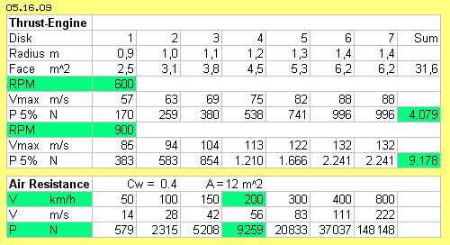
A cone-shaped thrust-unit was used at previous conception (picture 05.16.07 at E). The table 05.16.09 shows corresponding data. Seven rotor-layers are installed with partly different radius (from 0.9 m to 1.4 m) at one shaft. Again the pressure at the rim is applied on 2/3 of the face. The speed-difference between stick- and glide-faces is assumed with 5 %. Revolutions between 600 and 900 rpm result thrust-forces of about 4000 N up to 9000 N (marked green).
Below the air-resistance is calculated for different speeds, based on known formula F= 0.5*A*rho*v^2*Cw. The face A is assumed with 12 m^2, the density rho with 1.25 kg/m^3 and the specific resistance-value Cw with 0.4 (a high value, as e.g. a glider has Cw=0.15). The previous thrust of about 9000 N would allow that helicopter to travel with a speed of 200 km/h (marked green).
This table also shows, double speed (at 400 km/h and 800 km/h, below right side) increases the air-resistance by square (4-fold and 16-fold). That's why airliners fly at great height within thin air (density about 0.4 kg/m^3), where the air-resistance is reduced to one third. However, up there also the performance of common thrust machines is corresponding reduced.
Opposite here, the boxes are hermetic closed and the air pressure within is constant. The performance is independent from external conditions. These machines can even drive with a density some higher, e.g. with rho = 2 kg/m^3. The thrust increases by one half, here e.g. up to about 13500 N.
At these cone-engines, the air is pulled around curved faces. As described upside, the convex glide-face is released, at the other hand, the flow ´scratches´ along the concave stick-face. Here is assumed a difference of only 5 %, e.g. from 132 km/h a reduction to 125 km/h. Quite realistic, the flow at the stick-face could be only 119 km/h or even 112 km/h ´slow´. The thrust force increase double or three-fold, here up to 18000 N or even 27000 N. So that air-pressure-cone-engine will deliver more thrust than necessary for that helicopter.
Lift Forces
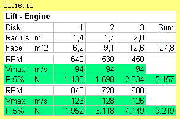
At previous conception was used a bowl-shaped engine for creating lift force (picture 05.16.07 at D). Table 05.16.10 shows corresponding data. Three rotor layers are installed, one including the other, with radius of 1.4 m, 1.7 m and 2.0 m.
The rotors are not connected with a common shaft, but all rotors have a rim gear at the middle. The drive of each rotor is done a separate shaft and a separate engine. So each rotor can drive different revolutions, independent from the others, even contrary turning.
At this table, the lift forces are calculated for speeds of each 94 m/s and again one third faster (123 m/s, 128 m/s and 126 m/s). Resulting are lift forces of about 5000 N up to 9000 N (marked green). So a helicopter of five tons could hover. Even if the big rotor would fail, both smaller rotors could produce sufficient lift.
This engine could be build some smaller or could produce much more forces, like mentioned upside. Instead of the normal air pressure, it could drive with ´thick´ air (e.g. with rho=2 kg/m^3, factor 1.5). At this advantageous bowl-shape, the difference of speeds will not be only 5 % (like calculated here), but also 10 % or even more (factor 2 to 3). Resulting would be forces up to 40 kN - opening quite new possibilities.
Energy-Source
Naturally now it seems mysterious, from which energy source these forces might come. The technique of conventional helicopters is quite natural: the chemical energy of the fuel is transferred into mechanical motion and via rotor-blades the air is pushed down, so the weight of the aircraft is lifted. If the rotor of a helicopter is 6 m long, it covers a circle-face of 113 m^2. Its weight of 3500 kg corresponds to an air volume of 2800 m^3, an air-pile of 25 m height above the rotor-face. Permanently these air masses must be accelerated downward with hurricane speed. However, the air escapes any pressure, so the efficiency is once more minor than at common energy transformations.
The air-volume of all radial-, cone- and bowl-boxes of previous new helicopter conception are only 12 m^3 in total. Each particle of that air-mass of 10 kg is steady flying around with its molecular movement speed of some 500 m/s. Based on known formula E=0.5*m*v^2 this corresponds to the huge energy of 1.250.000 J. The particles hit on a wall, however not right angle all times but in average by 45 degree, so only with 0.7 of the perpendicular force. The static pressure at a wall is (with rho=1.25 kg/m^3 and v=500 m/s), based on known formula P=0.5*rho*v^2 thus 156250 N/m^2. Factor 0.7 results the ´normal´ atmospheric pressure of roundabout 100000 N/m^2. Only one hundredth part of, these 1000 N/m^2, are necessary for suitable lift- and thrust-forces - like achieved at all engine-variations discussed upside.
The air rotates within the disk-shaped boxes. The particles scratch along the walls by flat angle. The perpendicular pressure is reduced. Valid is the strong law of energy-constant: if a particles affects stronger pressure towards front side, it can affect only less pressure aside. Here, the force of kinetic flow pressure is not used, it´s idle running just around circled tracks. Indeed, here is used only the ´side´-effect: fast flows affect less static pressure aside than slower flows. Only that secondary appearance is used here - and that usage does not lessen the primary appearance of the idle running flow.
The enclosed air masses are put in rotation at the start of the system. However, at the slow starting, no ´heat´ is added, the molecular speed of particles is not accelerated as the particles follow the suction of rotor-blades by themselves. The energy of the air mass is still constant. Only the original chaotic motion of the particles becomes ordered a little bit. However even within a flow of 100 m/s, the particles crash around still by 500 m/s, only some more into a certain direction, preferably circling along curved faces on and on.
Some energy-input is demanded for starting the system (or following accelerations). At the running mode however, only the friction losses must be balanced. The energy-input is only the trigger (and not the energy-source). Only the (reduced!) static pressure-forces coming up aside of the glide- and stick-faces, only that secondary side-effect is used. These effecting forces correlate not with the energy-input. At running mode, the rotor and the air nearby are moving same speed. Even the machine delivers full performance, the energy-input is a minimum - at least in comparison with common techniques of aircrafts.
These effects come up at the upside and below faces of every wing. These motion processes are rebuild here within a closed system. This principle can be realized by know techniques in multiple variations. It´s a clear example for using given energies without consuming and exhausting the energy-source.
Basic Principle
For all sceptics, the basic principle is summarized once more. If the profile A of picture 05.16.11 is moved through the air, a thrust force is demanded corresponding to its air resistance. The profile B shows only the half of width, the air resistance is less and thus also the demanded thrust. Based on the asymmetry, now comes up a one-sided force. Based on the difference of static pressures results the lifting force. That force is multiple stronger than the demanded thrust. At the optimum conditions of gliders, e.g. at speed of 180 km/h, the air resistance (respective demanded thrust) is less than one tenth of its weight.
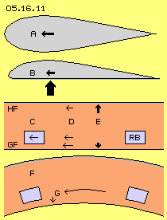
The motoric thrust at airplanes is necessary for compensation of the air resistance. The resulting lift force is based exclusive at the atmospheric pressure respective its manipulation at the upper and below faces of the wing. The suction effect back-upside makes the particles fall backward-down, resulting a flow. The suction spreads forward, however only up to sound-speed. Based on the difference of speeds at all surfaces, results the difference of static pressures and thus the wanted lift forces.
This factum is theoretically and practically approved and here rebuild within a closed box C. Between two faces, the stick- and glide-face (HF and GF at C), an ´artificial wind´ is generated by the rotor-blades (RB, blue). Once more less thrust is demanded, because only a small volume of air must be kept rotating steady. The air is moving nearby same speed like the rotor, along the glide-face some faster, along the stick-face some slower (see arrows at D). Resulting are different forces affecting aside of the flows, resulting the thrust force upward directed (see arrows at E).
The difference of speeds comes up, if the distance between the rotor-blade towards the stick-face is longer than towards the glide-face. That difference increases, if the stick-face shows most rough structure, and opposite, the glide-face is most smooth Most intensive stronger are the different pressures at the cone-shaped and bowl-shaped engines (at F). The rotor-blades suck the air around the convex curved glide-faces (G) without any resistance, while the flow is strongly hindered at the concave stick-face.
These effects come up at each wing without any doubts (and also at each curved surfaces). Here these motion processes are organized within a closed system. This principle can be used for multiple purposes, by simple and well known techniques.
High-Performance Thrust-Engine
At picture 05.16.12 are sketched relative large engines, at A and B by longitudinal cross-sectional view through the system axis. A view at the rotor-cage is shown at C. As an example, D and G shows how four units could be installed side by side within the fuselage on an airliner. Four units could be arranged one behind the other at the rear part of an airliner, like marked at E and F.
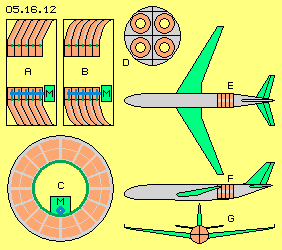
At the central part of these machines, the air is moving slow above small surfaces, so that space contributes merely to the performance. This area is used better for stabile mounting the stationary boxes. Also the shaft (blue, eccentric arranged) is well suspended there. The ring-shaped disks can be shaped like truncated cones (at A) or in shape of bowls (at B).
The rotor-cage (grey, see C) now is also ring-shaped. The radial ´rotor-blades´ are connected with concentric rings, outside and at the middle (possibly also between). The rings must be guides by each three ball bearings. At the middle, the rotor-cage has a gear rim (dark green). The drive is done by a gear wheel (blue) at a common shaft and one motor (M, green). Several rotors (here e.g. five) can build one unit. For service functions, each autonomous thrust-unit can be exchanged completely (´plug-in´ or like baggage container, see D).
Table 05.16.13 shows the data. A small version (left) has an inner radius of 0.5 m and an outer radius of 1.0 m. A larger version (right column) has radius of 1.0 m and 2.0 m. The ring-shaped faces are 2.4 m^2 respective 9.4 m^2.
The small version is running 1200 rpm and the large version only with 450 rpm. The maximum speeds at the rim are (suitable) 126 m/s resp. 94 m/s. The weighted average is assumed at 2/3 of the radius, thus the average speeds are calculated with 105 m/s and 79 m/s.
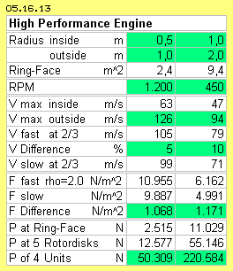
The speed difference of flows along the stick- and glide-faces was assumed with 5 % at previous calculations, and also here at the small version. At these cone- and bowl-shapes, a difference of 10 % is quite realistic, and used here at the large version. So the kinetic pressure of the flows is here calculated with 105 and 99 m/s respective with 79 and 71 m/s.
At great height, anyhow the boxes must be hermetic closed, so these machines can also work with density some higher. Here for example the density rho = 2.0 kg/m^3 is assumed. The kinetic flow pressure is calculated for both versions, each with the fast and reduced speeds. The difference of kinetic flow pressures is 1068 N/m^2 at the small version and 1171 N/m^2 at the large version. That difference of roundabout 1000 N/m^2 same time is the difference of static pressures at the stick- and glide-faces.
Quite upside, that one hundredth of the atmospheric pressure was aimed (1 kN/m^2 of 100 kN/m^2). This is achieved with both versions and realistic achieved by most versions. In order to achieve wanted thrust forces, only sufficient large faces must be installed. Here, the small version has a surface of 2.4 m^2, five rotor-layers are mounted at one unit, Four times these units produce about 50 kN. The large version has a surface of 9.4 m^2, resulting 220 kN as a whole - the size e.g. of an A320.
Consequences
These air-pressure-bowl-engines demand drive at a range of common service-functions of such airplanes. Small fuel tanks will do. Complex external jet-engines no longer must be build and maintained. These new machines are much lighter and easier constructions. They behave like (very large) gliders with according few noise pollution and air disturbances. Everybody might reason about the consequences, e.g. for airports and about other points of view.
Analogue to previous conception of a helicopter, all kind of helicopters will come up, designed for most different usage. Some cars already are driving autonomous based on assistant systems. Analogue the heli-flying might become everyday reality - with diverse consequences, positive and possibly negative. Traffic exists also at the land-, rail- and water-roads and even within airless space - and autonomous thrust would be welcome.
That´s no science-fiction. It´s only a smart usage of side-effects of known behaviour of the molecular movements of air particles. I make no patent application for this invention. Everybody may use these open-source ideas.
Evert / 2015-12-31
ap0516e.pdf
is a print version of this chapter,
ap0516ae.pdf is a shorter Print version.